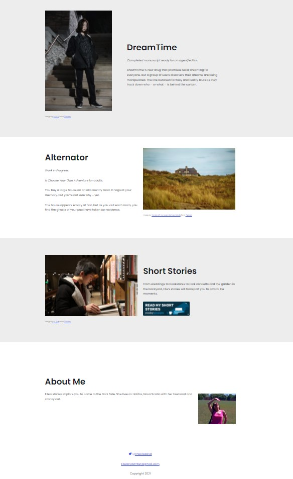
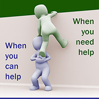
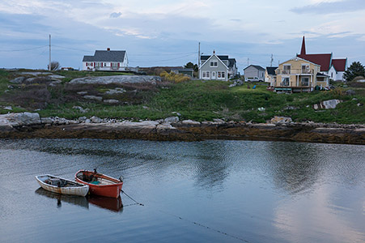

Website Design
Creator Website Templates
Many creators find websites annoying. They need their website. They use their website. And they want someone else to take care of their website. The effort spent on supposedly easy-to-use options are not cost-effective. The learning curve is steep and exhausts the creator's limited time and energy.
Early creators need to be particularly strategic about their focus. Sure, everyone needs to manage their time well. But early creators are lucky to have an hour each day to spend creating, and they need to spend that time creating, not learning about how to select a theme, change options, and check security. Experienced creators know that, eventually, some business related tasks need to be outsourced. Paying someone else to manage responsibilities they don't enjoy frees up their time for the parts of their business they love.
These templates are designed to allow creators to have their own, simple site without spending time learning technical details. It allows them to have their site and create their art too.
Written by Elle Boyd
Elle Boyd is an author based in Halifax, Nova Scotia. She wanted a site to showcase her works-in-progress without fancy graphics or forms.
I curated the images from Pixabay and helped Elle set up hre site. She was pleased with her simple and clean site.
If you enjoy stories with a dark edge like I do, you might want to check out her site or read her short stories, published on Reedsy.
Find the Helpers Website
This project is a website redesign. I ran a site called FindTheHelpers.Online that was a compilation site of organizations or charities that provided support for people, the animals, or the environment.
- Select a new domain name.
- Create this style of template and add to the creator website templates.
- Integrate categories and tags.
- Add mapping of the locations into the template.
Once the new design is completed, organizations will be added to the site and the site re-launched.
Itotonbo Studios Website
Itotonbo Studios is my photography website. Currently, this is a Weebly site.
One of my many personal projects is to create a gallery page, incorporating proper alt tags and audio descriptions. I will also adjust the contrast and update the text and images.